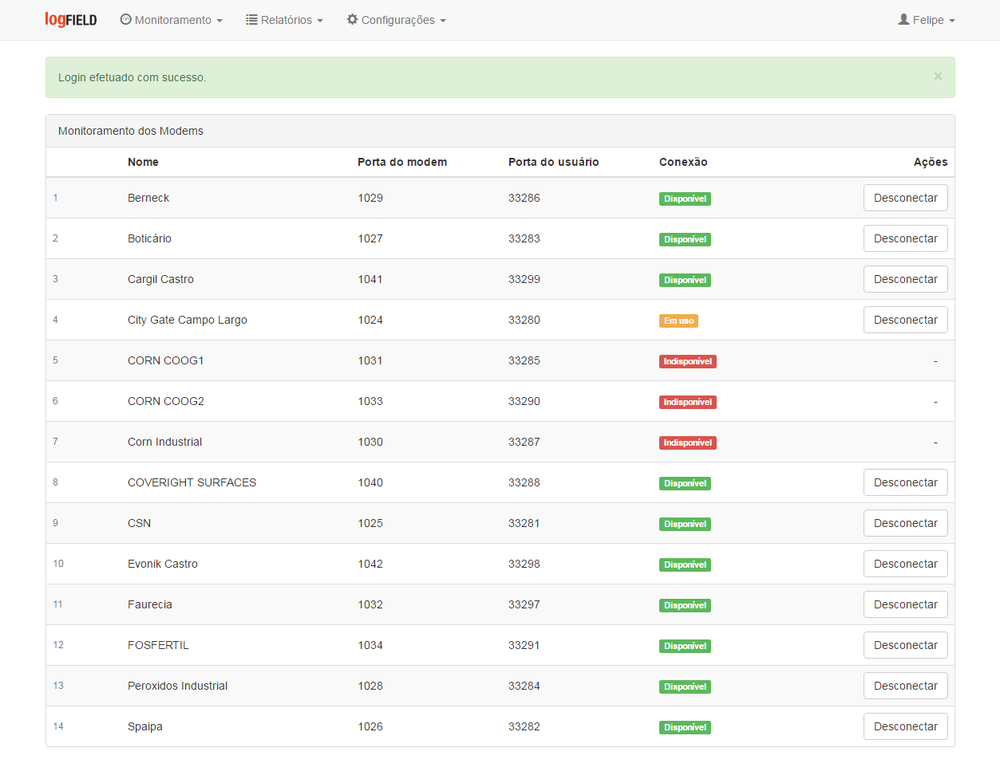
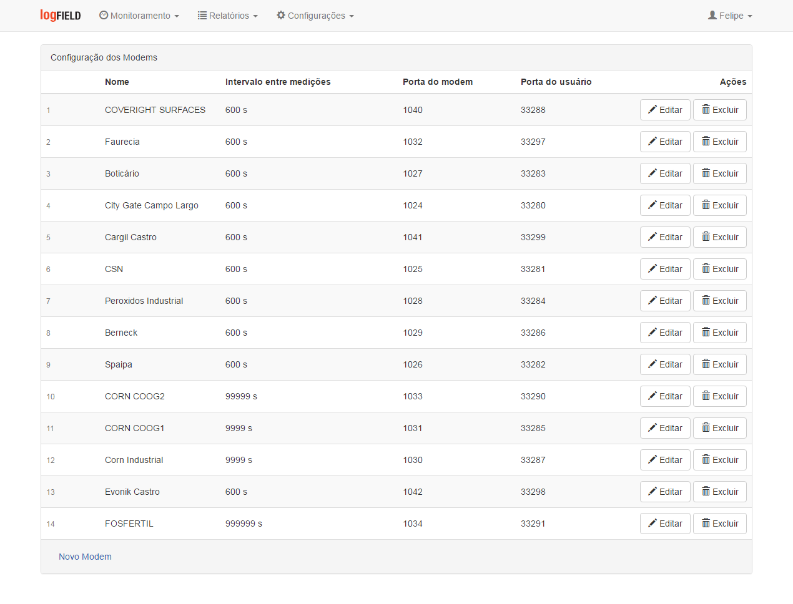
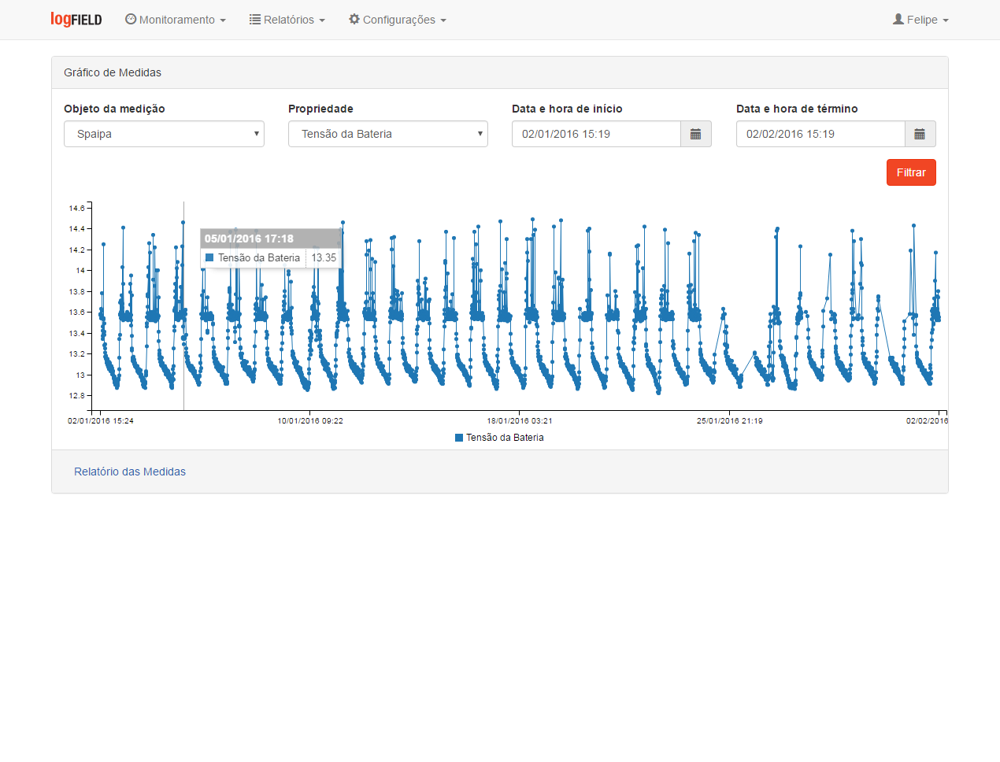
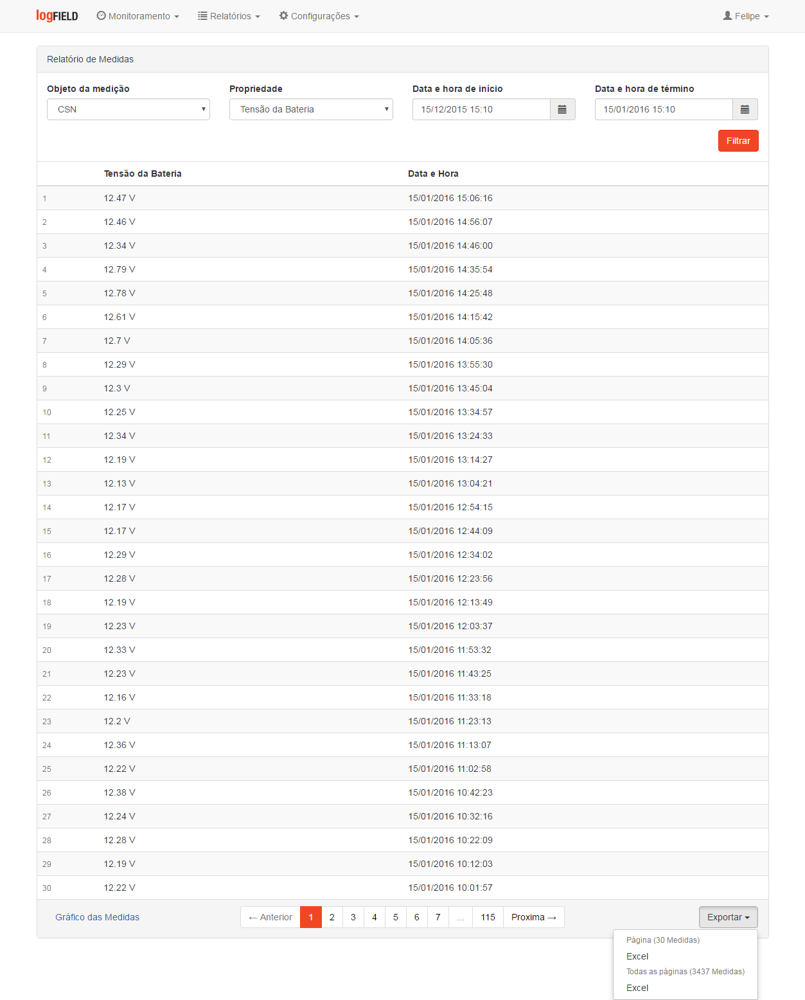

Consultoria Técnica
- Utilização de tecnologias
- Estudo de viabilidade técnica
- Levantamento de especificações
- Análise de prazos
- Análise de custos
Através de consultoria técnica e desenvolvimento de soluções de hardware e software podemos transformar as suas idéias em produtos. Atuamos em todas as fases do projeto desde sua concepção à produção final.
Nosso portfólio de produtos abrange equipamentos de comunicação, coleta de dados de campo e sistemas web para gerenciamento dos equipamentos e dados coletados.
A Logfield oferece serviços de consultoria técnica e de desenvolvimento de soluções de hardware e software para plataformas desktop, web e mobile a fim de auxiliar nos projetos, produtos e negócios de seus clientes.
O diferencial da Logfield é a sua versatilidade em atuar nas diversas fases de um projeto, desde sua concepção até o seu lançamento, agregando valor aos seus clientes através de conhecimentos em diversas áreas tecnológicas.
A linha de produtos Logfield é composta de softwares e equipamentos de telemetria para atender às mais diferentes necessidades do mercado. Com desenvolvimento próprio, a Logfield se diferencia por ofertar produtos já consolidados e também pela customização e adequação de seus produtos às necessidades de seus clientes.
O Modem LF002 é um modem GSM/GPRS quadriband desenvolvido para aplicações em que há necessidade de acesso remoto transparente à equipamentos em campo.
A instalação é realizada junto ao equipamento do cliente e provê um canal de comunicação TCP/IP transparente, ou seja, sem alteração dos dados trafegados, entre o equipamento e seu software original de configuração e acompanhamento.
Para os casos que o software original do equipamento não atue como um servidor de conexões TCP/IP, impossibilitando assim a comunicação direta por parte do modem, é possivel utilizar o Sistema de Comunicação Transparente - Proxy Logfield para permitir esta comunicação.
A comunicação com os equipamentos de campo é feita através de uma interface serial RS232/RS485/TTL ou Ethernet.
A configuração dos parâmetros relativos à conexão GSM/GPRS tais como IP/Domínio e porta TCP do servidor de comunicação pode ser realizada por meio de um software de configuração local ou remotamente via comandos AT.
Para garantir a comunicação em caso de falha de alguma operadora de telefonia o modem permite a utilização de até 02 simcards de diferentes operadoras.
O sistema Proxy Logfield atua como um gerenciador de conexões TCP/IP provendo comunicação entre os equipamentos de campo e os seus respectivos softwares originais de configuração e acompanhamento.
Foi desenvolvido para gerenciar a comunicação remota com os equipamentos de campo quando há restrições da operadora de telefonia que impossibilitem a comunicação direta, tais como IP dinâmico, NAT, entre outros.
Pode ser utilizado em conjunto com o Modem Transparente - LF002 mas também é compatível com outros modems de mercado que permitam iniciar uma conexão TCP/IP com o servidor.
Além do gerenciamento de conexões TCP/IP o sistema efetua a medição da quantidade de dados trafegados e da latência de comunicação. Ao ser utilizado em conjunto com o modem Modem Transparente - LF002, o sistema permite também o monitoramento da tensão de alimentação e do nível de sinal em dBm do modem em campo.
Estes dados podem ser visualizados através de relatórios e gráficos ou baixados no formato Excel.
No sistema Proxy Logfield o usuário cadastra os diversos equipamentos com os quais deseja comunicar em campo e atribui a cada um deles duas portas TCP únicas, a porta do equipamento e a porta do usuário.
O modem do equipamento deve ser configurado para se comunicar via TCP/IP com o sistema na porta do equipamento configurada para ele no sistema.
Quando o equipamento se conecta ao sistema ele se torna disponível para comunicação. Para efetuar a comunicação o software do equipamento deve ser configurado para se comunicar via TCP/IP com o sistema na porta do usuário.
Caso o software do equipamento não possua a funcionalidade de comunicar com o equipamento através de uma conexão TCP/IP, somente serial por exemplo, pode-se utilizar softwares que convertem a conexão serial para TCP/IP.


A remota LF5102 é um equipamento para controle e monitoramento remoto de sinais analógicos e digitais. Possui comunicação GSM/GPRS com o Sistema de Telemetria - Stairway para envio de dados e recebimento de parâmetros e comandos.
Quanto à comunicação, a remota LF5102 pode operar conectada ao sistema em modo tempo real, em que se encontra sempre conectada, ou em modo baixo consumo, em que efetua comunicações pontuais em períodos de tempo configurados, para aplicações em que há a necessidade de baixo consumo de energia, como conjuntos fotovoltaicos e demais sistemas alimentados à bateria.
Possui o seguinte conjunto de entradas e saídas:
Entradas:
08 entradas analógicas (0-5V/0-10V/4-20mA)
06 entradas digitais isoladas (seco/molhado/coletor aberto)
06 contadores de pulso de 32 bits
Saídas:
02 saídas analógicas (0-10V)
12 saídas digitais (relé NA)
Para garantir a comunicação em caso de falha de alguma operadora de telefonia a remota permite a utilização de até 02 simcards de diferentes operadoras.
O Sistema de Telemetria Stairway é um sistema web para supervisão, monitoramento e controle de dados enviados por equipamentos de telemetria tais como remotas e coletores de dados. Compatível com a Remota de Telemetria - LF5102 é também compatível com outras remotas e equipamentos.
Composto de base de dados, software de gestão da comunicação e software de gestão dos dados, o sistema foi desenvolvido com o objetivo de ser uma ferramenta completa para acompanhamento das variáveis de campo monitoradas pelas remotas de telemetria.
Permite a integração com outros sistemas do cliente tais como ERP's e/ou supervisórios através dos Modbus e OPC ou através da utilização de webservices com formato negociável entre as partes.
O sistema permite o cadastro e a edição de diversos entes cadastrais tais como usuários, operadores, simcards, equipamentos, registradores, fórmulas, setpoints de alarme e outros bem como possibilita o acompanhamento das diversas variáveis de medição através de relatórios e gráficos que mostram desde o histórico de todas as medidas coletadas no tempo até as últimas medidas e alarmes ocorridos por equipamento e/ou por grupo de variáveis. Os dados de relatórios podem ser acompanhados no sistema ou baixados para o formato Excel.


A Compagas, Companhia Paranaense de Gás, é a empresa responsável pela distribuição de gás natural no Paraná, atendendo clientes dos segmentos residencial, comercial, industrial e veicular.
A SCGÁS (Companhia de Gás de Santa Catarina) é a empresa responsável pela distribuição do gás natural canalizado em Santa Catarina. Criada em 1994, atua como uma sociedade de economia mista e tem como acionistas: Celesc, Gaspetro, Mitsui Gás e Infragás.
Por mais de um século a Landis+Gyr tem ajudado o mundo a gerenciar melhor a energia. Seus medidores e soluções permitem a concessionárias e consumidores finais em todo o mundo aumentar a sua eficiência energética, reduzir seus gastos com a energia e contribuir para um uso sustentável de recursos naturais.
A Copel foi criada em outubro de 1954, é a maior empresa do Paraná e atua com tecnologia de ponta nas áreas de geração, transmissão e distribuição de energia, além de telecomunicações.
Há 35 anos, o Grupo Lumicenter Lighting desenvolve e fabrica produtos de iluminação com tecnologia, inovação e design, e oferece de forma consistente e confiável um amplo escopo de produtos com milhares de soluções convencionais e a LED para os mais diversos tipos de ambientes.
O Grupo Realmobi é composto por empresas consolidadas, com experiência de mais de 20 anos no mercado de controle de tráfego e sistemas ITS (Intelligent Transportation Systems) e atuação em todo o território nacional.
A Logfield Engenharia foi criada no ano de 2014, com o propósito de oferecer soluções inovadoras e de qualidade para o mercado de telemetria bem como compartilhar o seu conhecimento e capacidade com empresas parceiras no desenvolvimento de soluções customizadas sob demanda.
Sediada em Curitiba a Logfield deseja se tornar referência no mercado de tecnologia pelo fornecimento de produtos inovadores de telemetria e por sua versatilidade em utilizar diferentes tecnologias a fim fornecer serviços de desenvolvimento de alta complexidade.
A Logfield tem como valores o respeito e o cuidado com o cliente, a transparência nas relações com seus parceiros e colaboradores e o cumprimento dos prazos estipulados.
Av. Visconde de Guarapuava, 3444, Sala 608
Curitiba, Paraná, Brasil - 80250-220
+55 41 3114-5401
contato@logfield.com.br